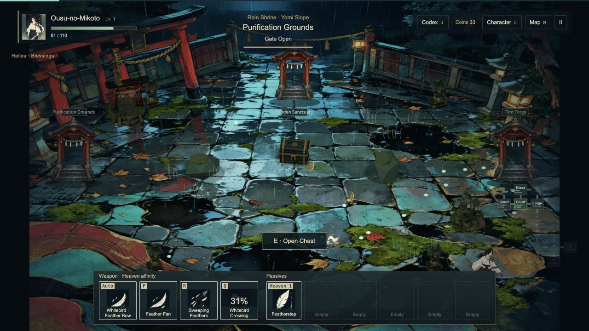
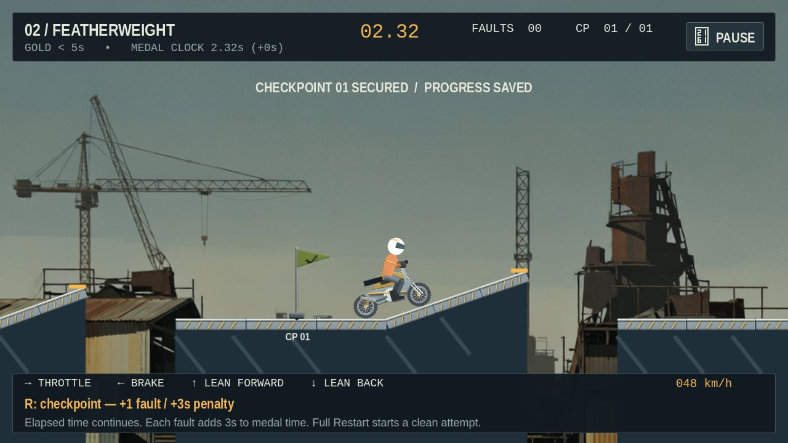
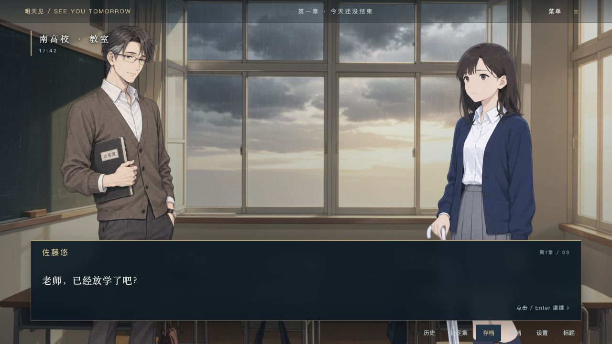
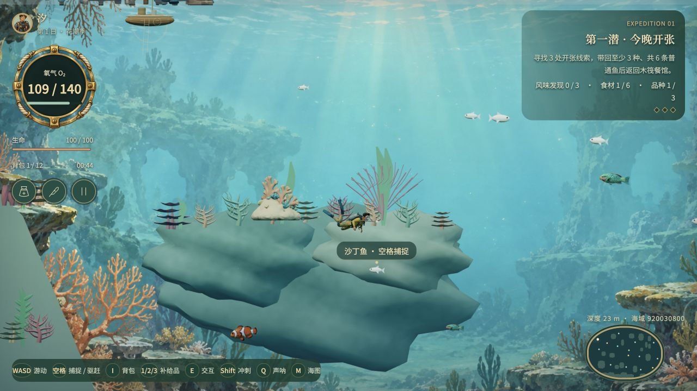

Play gameEXPERIENCE-ORIENTED GAME DEVELOPMENT
Recursive Game Creator
An Agentic Product-Level
Experience-Oriented Game Harness
1 The University of Hong Kong·2 Shenzhen Loop Area Institute
RECURSIVE GAME CREATOR / PROJECT FILM
Games evolve through experience.
03:40 · 1080p
Selected games developed with Recursive Game CreatorExplore the evolution
4 roles
Design, build, play, and review
3 rounds
Iterative game refinement
+5.19 points
GameCraft-Bench overall · R1 → R3
PLAY THE GAMES
Your turn to play.
Four selected browser games, one edition each.
No installation. Best on a desktop with a keyboard.

Play gameRacing Rocket Trials
Balance your bike, clear the gaps, and chase a better time across 24 courses.
KeyboardPlay now

Play gameSee You Tomorrow
Follow an illustrated mystery and shape the story through branching choices.
Mouse / keyboardPlay now

Play gameBluebay Night Kitchen
Dive for ingredients, discover the reef, and return to your seaside kitchen.
Keyboard + mousePlay now
Games load when opened. First-time loading may take a moment; progress is saved in your browser.
OVERVIEW
Beyond a playable prototype.
Abstract
Recent game design agents have made substantial progress in generating playable games. However, program correctness does not ensure an enjoyable experience for players.
We present Recursive Game Creator, an experience-oriented harness to advance agentic game development from rough game prototypes into entertaining games. Recursive Game Creator organizes recursive development around four components: Designer, Builder, Player, and Reviewer. The Designer translates user instructions and Reviewer's feedback into detailed plans. The Builder turns these plans into candidate games.
The coding-native Player creates and executes reusable policies through programmatic interfaces to efficiently collect diverse gameplay trajectories, mitigating evaluation bias caused by slow GUI-based collection. The Reviewer uses carefully designed trajectory-based metrics to induce player preferences, integrating with visual evidence and explicit textual preferences to evaluate games against game-specific criteria. Finally, the Reviewer accepts the better version and provides improvement reviews for the next round, closing the recursive loop.
Our method achieves state-of-the-art overall performance of 77.89 on GameCraft-Bench. On GameASG-Bench, it achieves a strict task success rate of 53.2%, a 34.1% improvement over the same-model baseline, and the highest mean runtime-check pass rate at 93.4% among compared methods. A user study shows longer playtime and higher ratings.
METHOD
Four roles. One feedback loop.
A shared workflow connects creation, executable playtesting, and experience-oriented evaluation.
01PLAN
Designer
Turns goals and feedback into experience hypotheses, concrete changes, and verifiable acceptance criteria.
Revision plan02CREATE
Builder
Implements mechanics and interfaces, prepares assets, and integrates them into a playable candidate.
Playable game03EXPERIENCE
Player
Writes reusable gameplay policies and executes diverse trajectories, recording actions, states, and visual evidence.
Gameplay evidence04REFLECT
Reviewer
Compares experience evidence, weighs strengths and trade-offs, and recommends which version to retain.
Revision feedbackGAME EVOLUTION
From V1 to V3.
Compare environments, interaction feedback, and presentation across three selected development versions.
THE STARTING POINT
A playable foundation.
A rooftop arena, a three-character roster, and simple combat effects establish the core fighting loop.
- Basic rooftop arena
- Simple ring effects
- Three-character selection
Selected development snapshots; scenes and gameplay states may differ. Meme Arena V1/V2 are restored snapshots; V1 uses the earliest retained compatible character models.
EXPERIMENTS
Quantitative results.
GameCraft-Bench assesses mechanics,
content depth, functional visuals, and art.
GAMECRAFT-BENCH / OVERALL
77.89/ 100
+5.19 points from round 1
Round 172.70
Round 275.35
Round 377.89
Three refinement rounds.
Gains in all five reported categories.
Quality across categories
Round 3Round 1 reference
View the complete reported scores +
| Method | Action | Timing | Strategy | Simulation | Adventure | Overall |
|---|---|---|---|---|---|---|
| GPT-6 Astra baseline | 73.33 | 64.26 | 71.44 | 74.78 | 72.49 | 71.26 |
| Recursive Game Creator · R1 | 67.96 | 68.76 | 72.10 | 77.72 | 76.95 | 72.70 |
| Recursive Game Creator · R2 | 70.33 | 73.19 | 72.96 | 80.57 | 79.69 | 75.35 |
| Recursive Game Creator · R3 | 77.62 | 74.41 | 74.46 | 82.94 | 80.00 | 77.89 |
Values transcribed from the current manuscript, not recomputed on this page. See the paper for evaluation details.
COMPLEMENTARY EVALUATION
GameASG-Bench
Source and runtime requirement compliance.
25/47Strict task success
98.3%L1 mean pass rate
93.4%L2 mean pass rate
CODING-NATIVE PLAYER
Diverse play.
Concrete evidence.
Separating policy generation from interaction lets the Player act repeatedly without a new model response at every step.
Watch different strategies unfold into recorded paths, visited interiors, and accumulated coverage—concrete evidence for the next revision.
Open full interactive viewBIBTEX
@misc{chen2026recursivegamecreatoragentic,
title={Recursive Game Creator: An Agentic Product-Level Experience-Oriented Game Harness},
author={Jiajun Chen and Haoyu Wu and Mingda Jia and Xihui Liu},
year={2026},
eprint={2610.08621},
archivePrefix={arXiv},
primaryClass={cs.AI},
url={https://arxiv.org/abs/2610.08621},
}